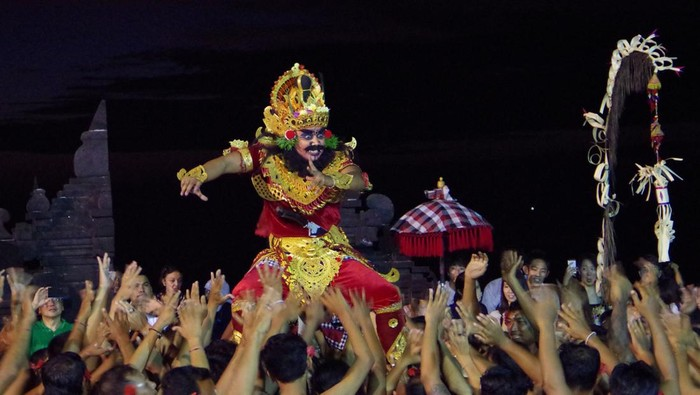

UPACARA ADAT BALI

1. upacara Ngaben
Upacara Ngaben merupakan salah satu upacara adat Bali yang
paling terkenal di masyarakat Indonesia. Upacara ini adalah
upacara untuk membakar jenazah dalam rangka
menyempurnakan jenazah saat kembali kepada Sang Pencipta
upacara Ngaben dilakukan untuk mengembalikan roh leluhur
ke asalnya atau pengembalian unsur Panca Maha Bhuta
kepada Tuhan/Ida Sang Hyang Widhi Wasa. Dalam ajaran Hindu,
jasad manusia terdiri dari badan harus (roh atau atma) dan badan kasar (fisik).
etika seseorang meninggal, yang mati hanya fisiknya saja,
sedangkan rohnya tidak. Maka dari itu, diperlukan upacara
Ngaben untuk memisahkan roh dengan badan kasarnya.
Bagi sebagian besar masyarakat Bali, upacara ini sangat penting
karena keluarga yang ditinggalkan dapat membebaskan roh orang
yang telah meninggal dari ikatan-ikatan duniawi untuk menuju
surga atau menunggu reinkarnasi. Upacara pembakaran mayat ini
menjadi salah satu daya tarik dari Pulau Bali untuk menarik wisatawan.
2. Upacara Melasti
Upacara Melasti dilakukan setiap tahun sekali sebagai bagian dari
rangkaian Hari Raya Nyepi di Bali. Upacara ini bertujuan sebagai
penyucian diri bagi para pemeluk agama Hindu.
upacara adat ini dilakukan selama tiga sampai empat hari
menjelang Hari Raya Nyepi. Para penduduk mendatangi beberapa
sumber mata air sakral seperti danau atau laut yang dipercaya
menyimpan mata air kehidupan.
Pada saat upacara ini berlangsung, mereka akan memercikkan air
suci ke kepala setia penduduk. Tujuannya untuk membersihkan
segala macam kotoran dan hal buruk dalam tubuh dan jiwa
sehingga bisa kembali suci.
3. Upacara Mekare-kare
Upacara Mekare-kare atau yang biasa disebut Perang Daun Pandan
merupakan upacara adat yang berasal dari Desa Tenganan.
Upacara adat Bali ini dilakukan oleh para pria sebagai
ajang untuk menunjukkan kemampuan mereka dalam bertarung
menggunakan daun pandan yang berduri tajam.
Upacara adat Bali yang satu ini dilakukan sebagai penghormatan
kepada Dewa Indra yang merupakan dewa perang dalam kepercayaan Hindu.
Setelah berperang, para peserta akan dirawat dan didoakan oleh orang
yang dituakan di sana agar mereka tidak merasakan sakit.
4. Upacara Saraswati
Upacara adat Bali Saraswati digelar untuk merayakan ilmu
pengetahuan yang ada di bumi. Upacara Saraswati dilakukan
sebagai ritual pemujaan terhadap Dewi Saraswati yang dipercaya
membawa ilmu pengetahuan ke muka bumi sehingga manusia menjadi
makhluk yang terpelajar.
Semua aspek yang berhubungan dengan ilmu pengetahuan,
mulai dari buku hingga kitab-kitab didoakan dalam upacara Saraswati.
Selain itu, ada juga pentas tari dan story telling yang akan dilakukan
semalam suntuk.
5. Upacara Galungan
Upacara Galungan dirayakan oleh umat Hindu setiap enam bulan Bali
(210 hari), yaitu pada hari Buddha Kliwon Dungulan
(Rabu Kliwon Wuku Dungulan). Istilah galungan sendiri berasal
dari bahasa Jawa Kuno yang memiliki arti menang.
Sesuai dengan namanya, upacara ini digelar untuk merayakan
kemenangan melawan kejahatan. Hal ini merujuk pada
kemenangan Dewa Indra dalam melawan Mayadenawa atau
kebaikan melawan kejahatan.
Inti dari peringatan ini bertujuan supaya manusia bisa
mengendalikan nafsunya, terutama nafsu buruk yang akan
mengganggu ketentraman hidup. Selain itu, upacara ini juga
dilakukan sebagai rasa syukur atas semua berkat yang diterima
dari Yang Maha Kuasa dengan diciptakannya alam semesta dan
seluruh isinya.
6. Upacara Mepandes
Upacara Mepandes dikenal juga dengan nama Metatah atau Mesangih.
Upacara ini dilakukan ketika seorang anak sudah mulai
memasuki remaja. Upacara ini dilakukan dengan pemotongan gigi
dengan tujuan menghilangkan nafsu buruk seperti kemarahan dan keserakahan.
Anak laki-laki yang suaranya sudah memberat dan anak
perempuan yang sudah melalui menstruasi pertamanya akan
melakukan ritual ini. Dalam ritual ini, 6 buah gigi taring
bagian atas mereka akan dikikis oleh seseorang yang dituakan.
7. Upacara Tumpek Landep
Upacara Tumpek Landep adalah upacara yang dilakukan
masyarakat Bali dalam menyucikan senjata dan peralatan yang
mereka miliki dengan sesaji dan doa. Dikutip dari sebuah jurnal
yang diterbitkan Universitas Udayana, Tumpek Landep dirayakan
umat Hindu setiap 210 hari, yaitu pada saniscara kliwon wuku landep.
|